1928
Der erste Vorhang hebt sich
Wilhelm Hartmann eröffnet die Luna Lichtspiele in Falkenried. In einem umgebauten Veranstaltungssaal erleben die ersten Gäste noch Stummfilme, die während der Vorstellung von einem Pianisten live begleitet werden.
FALKENRIED SEIT 1928
Fast ein Jahrhundert Kino. Vier Generationen.
Eine Leidenschaft.
SEIT 1928
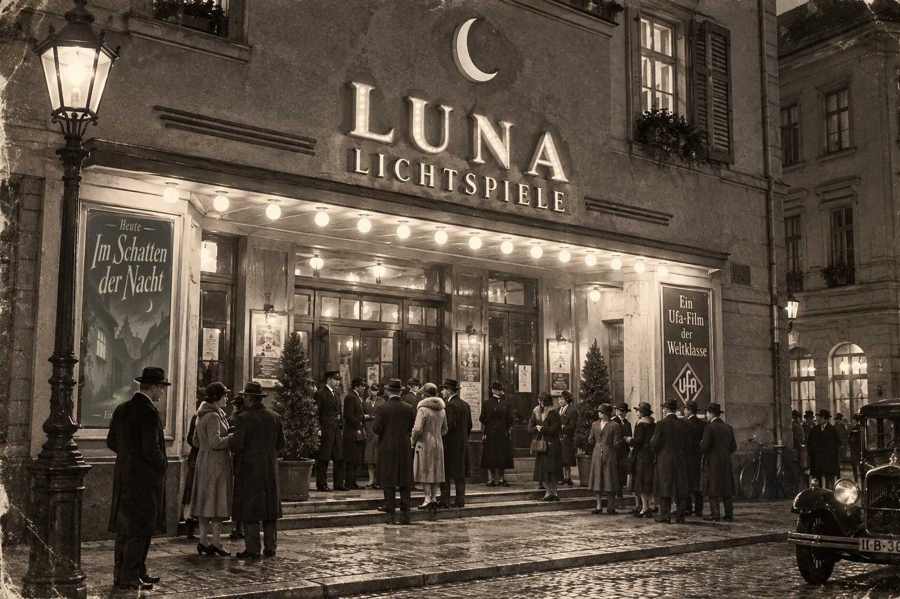
Als Wilhelm Hartmann 1928 in Falkenried die Luna Lichtspiele eröffnete, wurden Filme noch von einem Pianisten begleitet. Was als kleines Filmtheater begann, entwickelte sich über vier Generationen zu einem festen Bestandteil des kulturellen Lebens der Stadt.
Von den ersten Tonfilmen über die große Kinozeit der 1950er-Jahre bis zur digitalen Projektion hat sich das Luna immer wieder verändert – ohne seinen ursprünglichen Charakter zu verlieren. Heute führt Jonas Hartmann das Kino in vierter Generation und verbindet dabei die Geschichte des Hauses mit den Anforderungen eines modernen Filmtheaters.
UNSERE GESCHICHTE
Von der Stummfilmzeit bis zum digitalen Kino.
1928
Wilhelm Hartmann eröffnet die Luna Lichtspiele in Falkenried. In einem umgebauten Veranstaltungssaal erleben die ersten Gäste noch Stummfilme, die während der Vorstellung von einem Pianisten live begleitet werden.
1931
Nur drei Jahre nach der Eröffnung investiert Wilhelm Hartmann in eine neue Tonanlage. Erstmals sind in den Luna Lichtspielen Stimmen, Musik und Geräusche direkt aus dem Film zu hören. Für das junge Filmtheater beginnt damit eine neue Ära.
1945/46
Nach einer vorübergehenden Schließung nimmt das Luna seinen Spielbetrieb wieder auf. Mit einfachen Mitteln wird der Kinosaal instand gesetzt. Für viele Menschen in Falkenried wird das Kino in den folgenden Jahren wieder zu einem Ort der Unterhaltung und Begegnung.
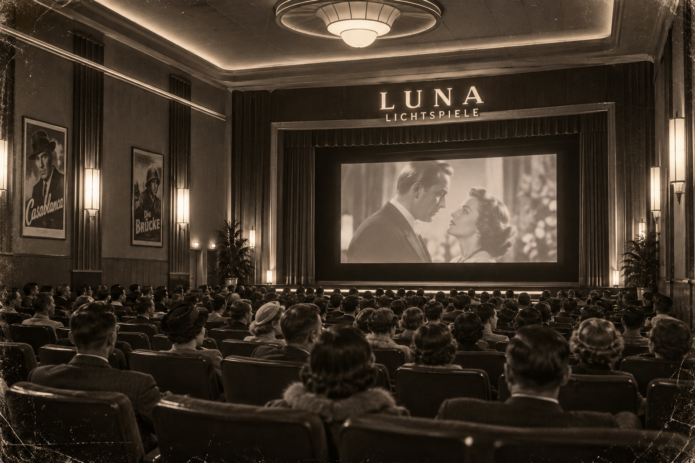
1958
Das Luna erlebt eine seiner erfolgreichsten Zeiten. Der Kinosaal wird modernisiert und erhält eine größere Leinwand sowie neue Sitzplätze. Vor allem am Wochenende füllt sich das Filmtheater regelmäßig – ein Kinobesuch gehört für viele Falkenrieder zum festen Freizeitprogramm.
1976
Das Fernsehen hat längst Einzug in die Wohnzimmer gehalten und die Besucherzahlen gehen zurück. Friedrich Hartmann reagiert mit besonderen Filmreihen, Wiederaufführungen und Sondervorstellungen. Das Luna beginnt sich vom klassischen Filmtheater zu einem kulturellen Treffpunkt weiterzuentwickeln.
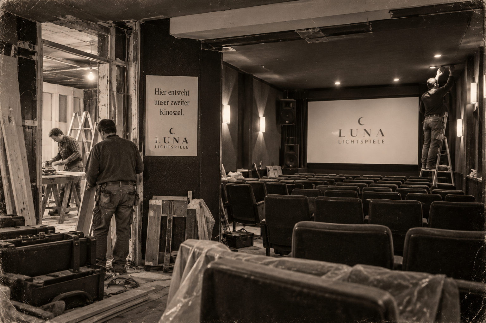
1994
Unter Claudia Hartmann entsteht in einem bislang anders genutzten Gebäudeteil ein zweiter, kleinerer Kinosaal. Dadurch kann das Luna neben größeren Produktionen nun häufiger kleinere Filme und besondere Programme zeigen.
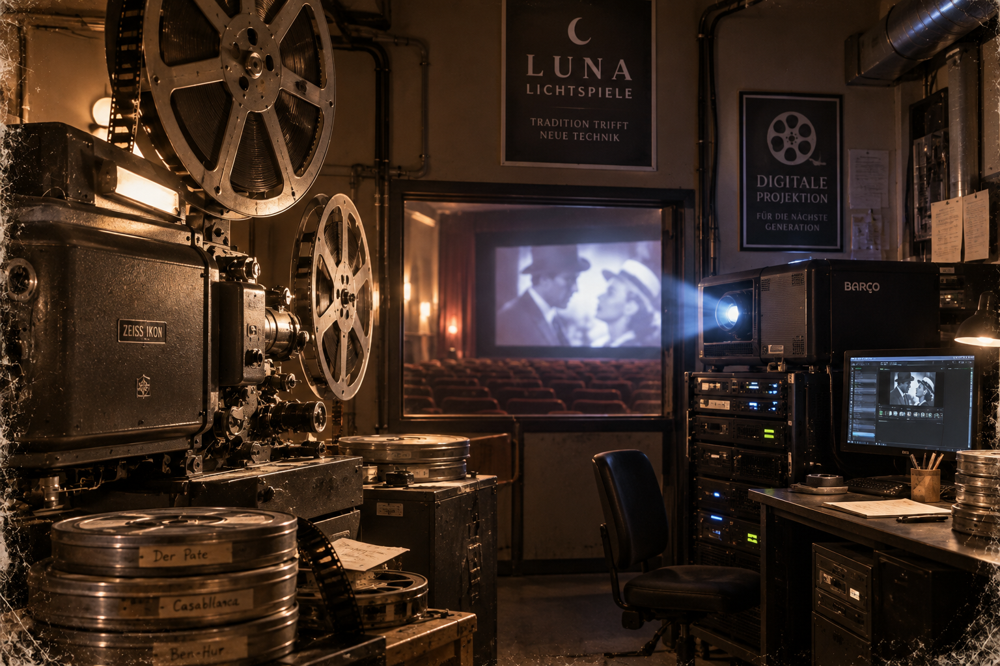
2012
Nach mehr als acht Jahrzehnten verändert sich die Projektion grundlegend: Die Luna Lichtspiele stellen auf digitale Kinotechnik um. Einer der alten Filmprojektoren bleibt erhalten und bekommt einen Ehrenplatz im Eingangsbereich.
2020
Die Corona-Pandemie zwingt auch die Luna Lichtspiele zeitweise zur Schließung. Jonas Hartmann und sein Team nutzen einen Teil dieser Zeit für Renovierungsarbeiten. Nach der Wiedereröffnung gewinnen Sonderveranstaltungen und gemeinsame Kinoerlebnisse noch stärker an Bedeutung.
2026
Heute führt Jonas Hartmann die Luna Lichtspiele in vierter Generation. Zwei Kinosäle, digitale Projektion und ein abwechslungsreiches Programm verbinden modernes Kino mit der fast hundertjährigen Geschichte des Hauses. Neben aktuellen Filmen gehören Klassiker-Abende, ausgewählte Filmreihen und Sonderveranstaltungen inzwischen fest zum Programm.
VIER GENERATIONEN
Seit der Eröffnung 1928 befindet sich das Luna in den Händen der Familie Hartmann. Jede Generation hat das Filmtheater auf ihre eigene Weise geprägt und durch eine neue Epoche des Kinos geführt.
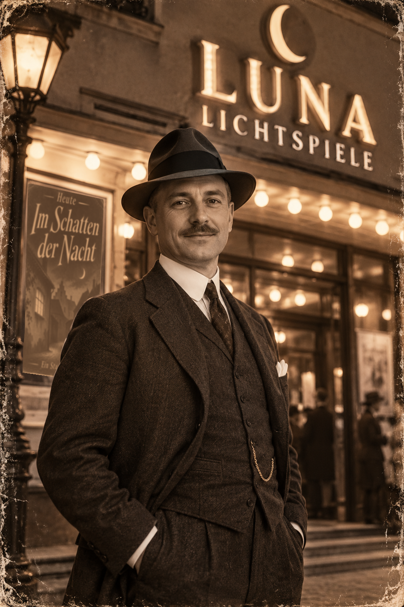
DER GRÜNDER
Wilhelm Hartmann wagt 1928 den Schritt vom Veranstaltungssaal zum eigenen Filmtheater. Für ihn ist Kino mehr als technische Faszination: Es soll ein Ort sein, an dem Menschen gemeinsam Geschichten erleben. Unter seiner Leitung übersteht das Luna seine ersten Jahrzehnte und wird zu einer festen Adresse in Falkenried.
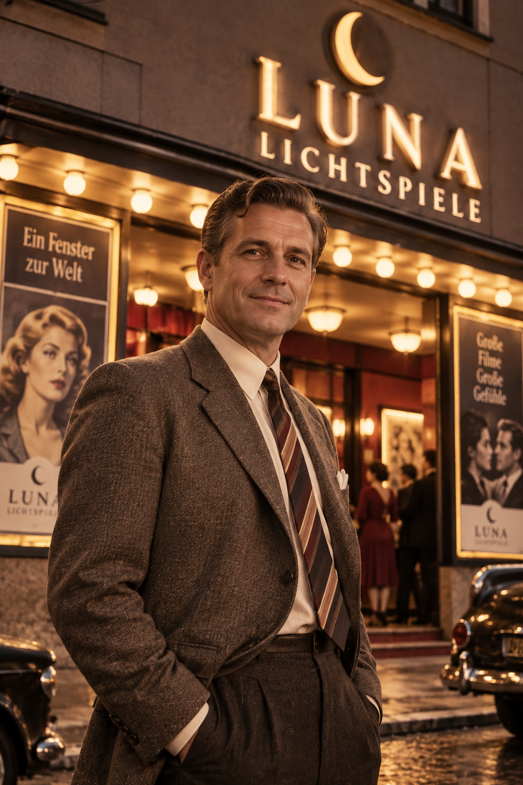
DER BEWAHRER
Friedrich übernimmt das Luna von seinem Vater in einer Zeit des Wandels. Während das Fernsehen immer mehr Zuschauer in die eigenen Wohnzimmer zieht, setzt er auf besondere Filmabende und persönliche Nähe zum Publikum. Damit bewahrt er den Charakter des Familienkinos und entwickelt das Luna zugleich zu einem kulturellen Treffpunkt weiter.
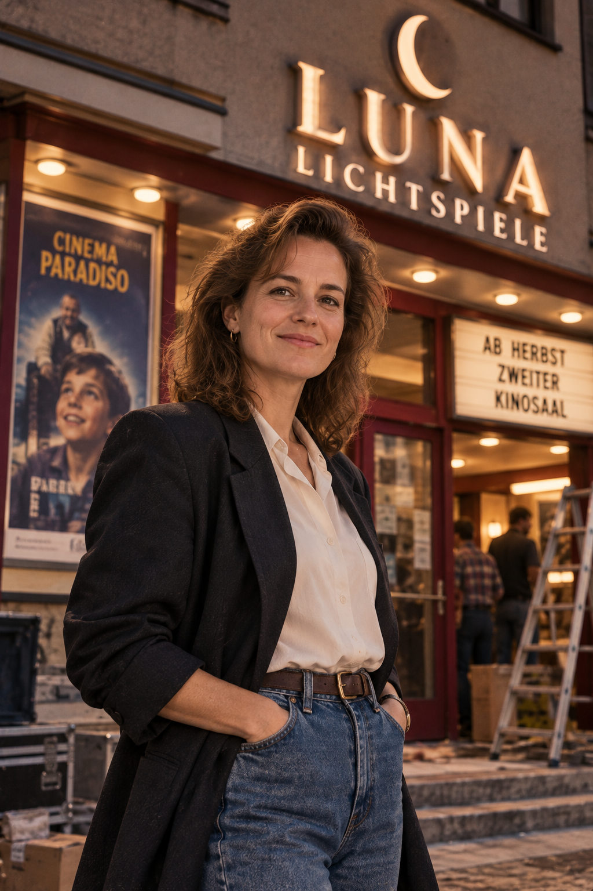
DIE ERNEUERIN
Claudia führt das Familienkino in eine neue Ära. Unter ihrer Leitung entsteht 1994 der zweite Kinosaal, später begleitet sie die Umstellung von analoger auf digitale Projektion. Dabei verbindet sie technische Modernisierung mit dem Anspruch, die persönliche Atmosphäre des Luna zu erhalten.
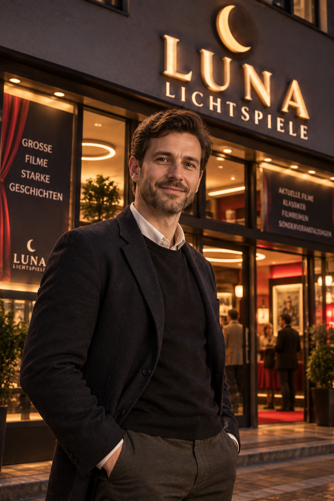
DER HEUTIGE BETREIBER
Jonas übernimmt das Luna 2018 in vierter Generation. Neben aktuellen Kinofilmen setzt er auf Klassiker-Abende, Filmreihen und Sonderveranstaltungen. Für ihn bedeutet die Geschichte des Hauses nicht, stehen zu bleiben – sondern das Luna so weiterzuentwickeln, dass es auch künftig ein besonderer Ort für gemeinsames Filmerleben bleibt.
KI-generierte Porträts der fiktiven Familie Hartmann.
DAMALS & HEUTE
Fast ein Jahrhundert liegt zwischen diesen beiden Ansichten. Fassade, Technik und Programm haben sich verändert – die Luna Lichtspiele sind ihrem Standort in Falkenried jedoch bis heute treu geblieben.
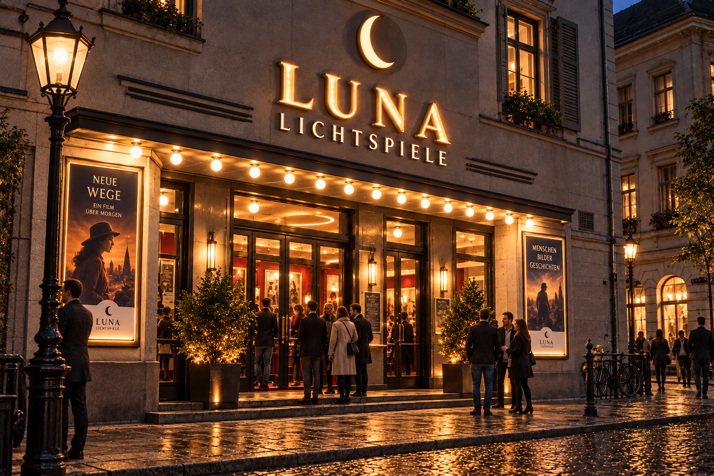
1928 2026Regler ziehen oder mit den Pfeiltasten zwischen damals und heute vergleichen.
STIMMEN AUS DEM LUNA
Drei Stimmen aus drei Zeiten erzählen von besonderen Momenten und davon, was das Luna für sie bedeutet.
1958
Eine Kinobesucherin erinnert sich
Mein erster Abend im Luna
Eine fiktive Kinobesucherin
An meinen ersten Abend im Luna erinnere ich mich noch genau. Vor dem Eingang standen die Leute bis auf den Gehweg und drinnen war fast jeder Platz besetzt. Als dann das Licht langsam ausging und der Vorhang sich öffnete, wurde es plötzlich ganz still. Für uns war Kino damals etwas Besonderes. Man ging nicht einfach nur einen Film sehen – es war ein richtiger Abend.
1994
Claudia Hartmann · 3. Generation
Platz für neue Geschichten
Claudia Hartmann · 3. Generation
Als wir 1994 den zweiten Saal eröffnet haben, war das für uns ein ziemlich großer Schritt. Plötzlich konnten wir neben den großen Filmen auch kleinere Produktionen und besondere Filmreihen zeigen. Natürlich war der Umbau eine Herausforderung – aber genau diese Mischung aus großem Kino und kleinen Entdeckungen gehört für mich zum Luna.
2026
Jonas Hartmann · 4. Generation
Warum Kino bleibt
Jonas Hartmann · 4. Generation
Natürlich kann man heute fast jeden Film irgendwann zu Hause sehen. Aber für mich ersetzt das nicht diesen Moment, wenn im Saal das Licht ausgeht und hundert Menschen gleichzeitig auf dieselbe Leinwand schauen. Genau darum geht es im Luna. Wir wollen die Geschichte dieses Hauses bewahren – aber gleichzeitig immer wieder neue Gründe schaffen, gemeinsam ins Kino zu kommen.
Fiktive, KI-generierte Audio-Erinnerungen zur Geschichte der Luna Lichtspiele.
DAS LUNA-QUIZ
Fast ein Jahrhundert Kinogeschichte liegt hinter dem Luna. Fünf Fragen zeigen, wie aufmerksam du durch unsere Geschichte gereist bist.
FRAGE 1 / 5
DEIN ERGEBNIS
AUS DEM LUNA-ARCHIV
Alte Fotografien, vergessene Erinnerungsstücke und besondere Einblicke: Unser kleines Archiv erzählt die Geschichte der Luna Lichtspiele aus einer anderen Perspektive.
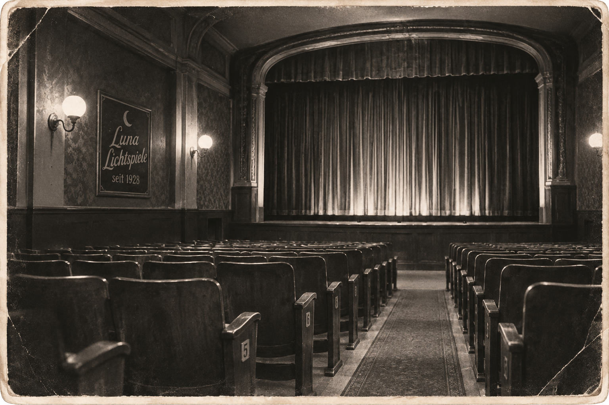
1928Der erste KinosaalHolzklappsitze, schwerer Vorhang und die Vorfreude auf bewegte Bilder: So begann die Geschichte der Luna Lichtspiele.
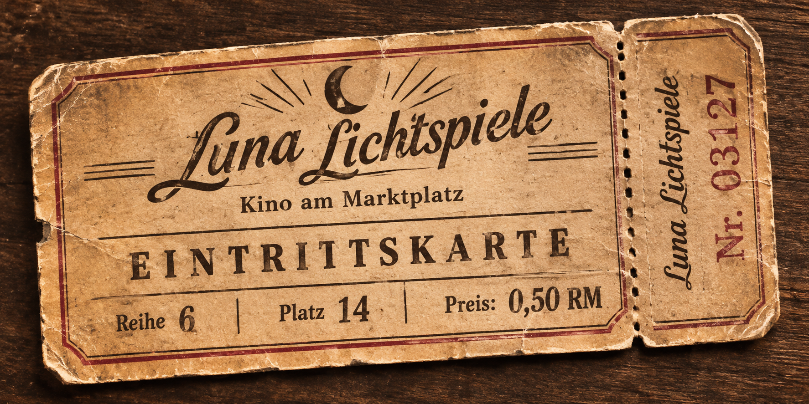
1931Eine Karte für einen KinoabendEin kleines Stück Papier, das den Eintritt in eine andere Welt versprach. Mit dem Einzug des Tonfilms begann auch im Luna eine neue Ära.
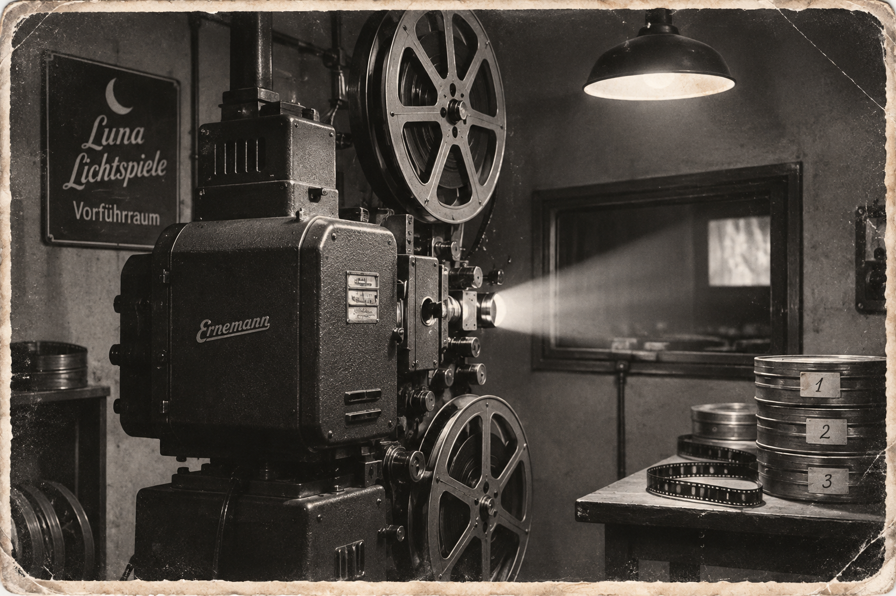
1958Hinter den KulissenRatternde Filmrollen, schwere Projektoren und ein Lichtstrahl durch die Dunkelheit. Im Vorführraum sorgte die Technik dafür, dass auf der Leinwand Geschichten lebendig wurden.
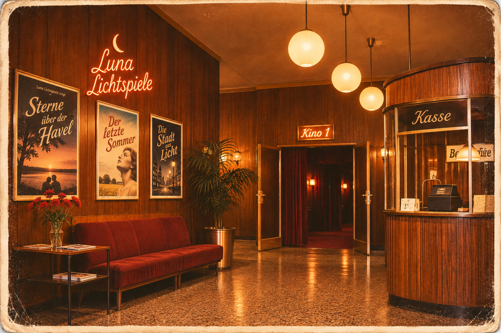
1976Treffpunkt vor dem FilmWarme Lichter, Filmplakate und ein kurzer Plausch an der Kinokasse. Das Foyer war schon damals mehr als ein Warteraum – hier begann für viele Besucher der Kinoabend.
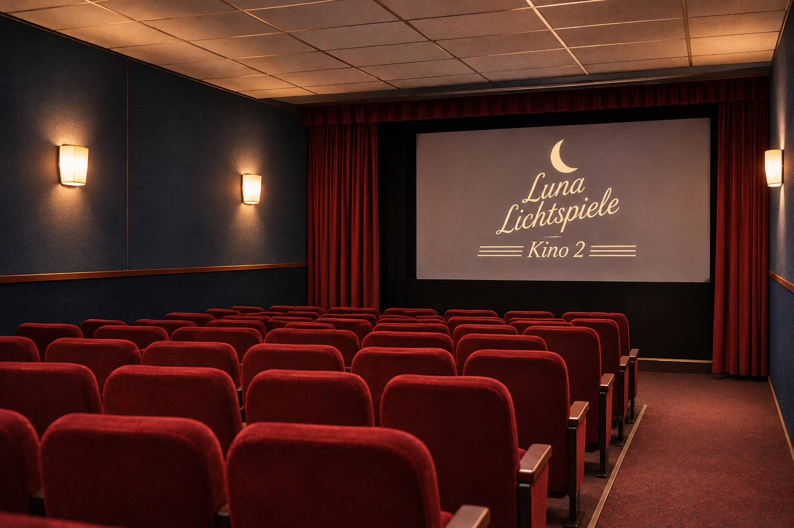
1994Ein zweiter Saal für neue GeschichtenUnter Claudia Hartmann wurde das Luna um einen zweiten Kinosaal erweitert. So entstand mehr Raum für besondere Filmreihen, kleinere Produktionen und neue Kinoerlebnisse.
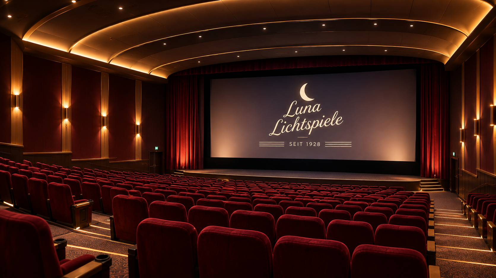
2026Tradition trifft GegenwartModerne Kinotechnik, gemütliche Sitze und die besondere Atmosphäre eines Familienkinos. Auch in vierter Generation bleibt das Luna ein Ort für gemeinsame Filmerlebnisse.
KI-generierte Visualisierungen und fiktive Archivstücke zur Geschichte der Luna Lichtspiele.
BLICK NACH VORN
Seit fast einem Jahrhundert gehen im Luna die Lichter aus, damit Geschichten lebendig werden. Und unsere eigene Geschichte ist noch lange nicht zu Ende.
Auch in vierter Generation bleibt das Luna ein Ort für Menschen, die Filme gemeinsam erleben möchten. Jonas Hartmann möchte bewahren, was das Kino seit 1928 besonders macht – und zugleich Raum für neue Ideen schaffen: besondere Filmreihen, gemeinsame Kinoabende und Begegnungen, die über den Abspann hinaus in Erinnerung bleiben.
2028 feiern die Luna Lichtspiele ihr hundertjähriges Bestehen. Ein besonderer Meilenstein für ein Familienkino, das sich immer wieder verändert hat, ohne seine Wurzeln zu vergessen.
100 JAHRE LUNA LICHTSPIELE
„Denn solange Menschen gemeinsam Geschichten erleben wollen, wird im Luna ein Licht brennen.“